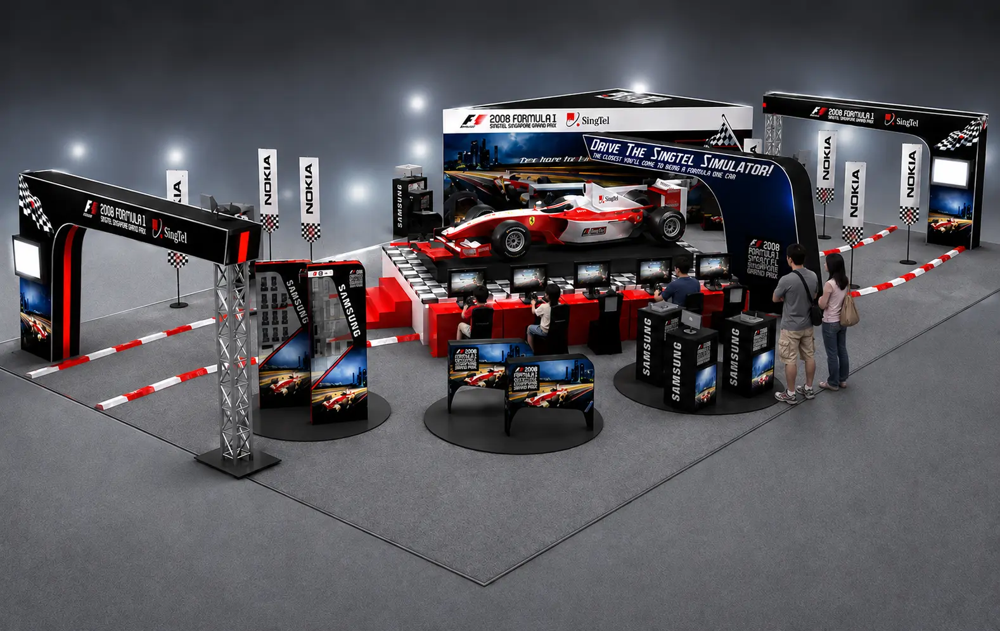
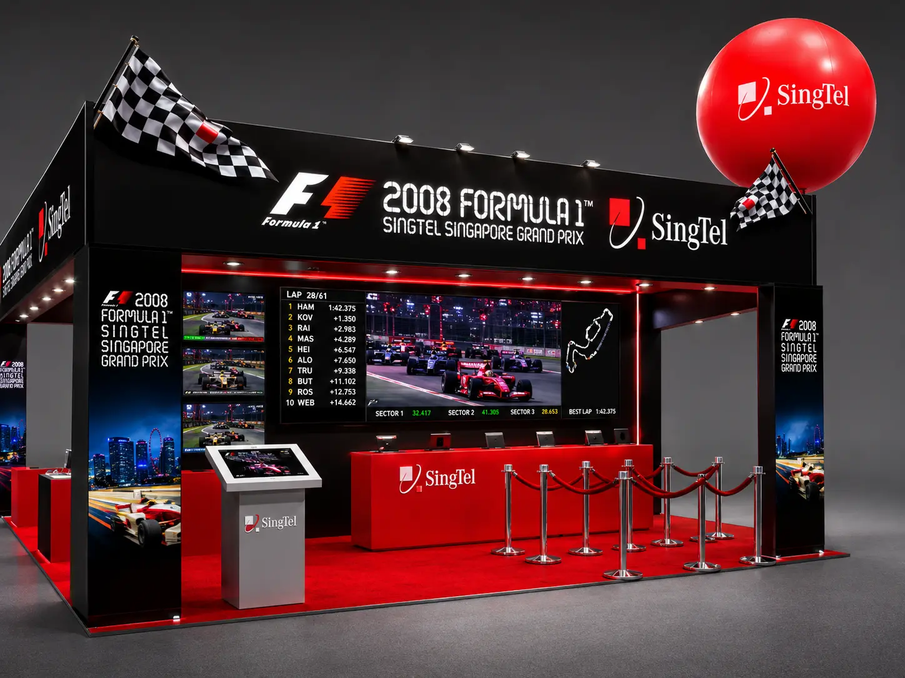
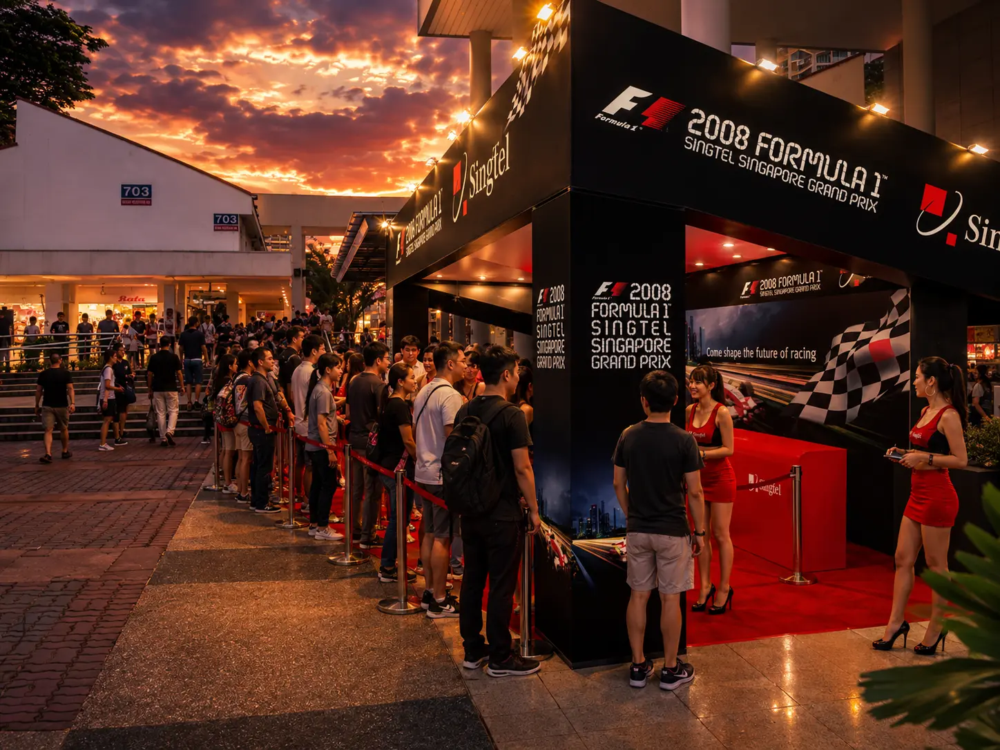

SINGTEL · FORMULA 1 · SINGAPORE 2008
F1 Exhibition
VivoCity
An exhibition for Singapore's first Formula 1 night race, connecting motorsport excitement with SingTel's mobile and broadband experience.

THE EXPERIENCE
A full-size Formula 1 car forms the central display. Gaming stations surround the attraction, while reception and account-registration areas connect visitor engagement with SingTel services.

